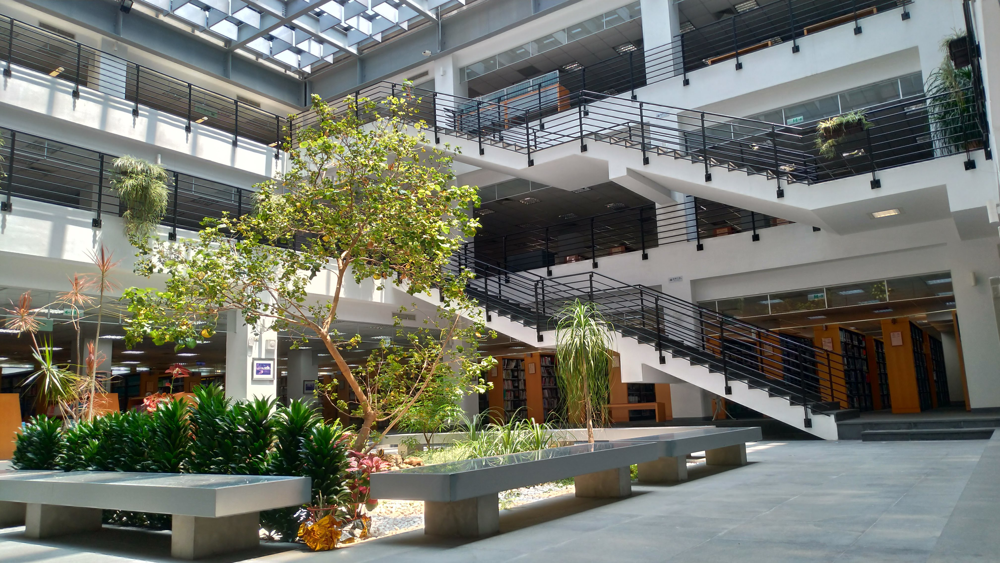

Station 11: Magic Forest & Wisdom Nourishment
The library's central courtyard features a dreamy "Magic Forest," symbolizing the roots of wisdom and the continuation of knowledge.
Wood is the raw material for paper, and this forest reminds us to "remember the source," cherishing the origin of every book.
More deeply, it connects two graduation requirements for Yuan Ze students: the TOEIC area and the Classic Fifty collection. These books are centralized here to cultivate humanities literacy, independent thinking, and foreign language skills.
Additionally, this area serves as a stage for students to showcase aesthetic creativity. Through the fusion of art and books, reading becomes not only knowledge absorption but also an experience of beauty in daily life.